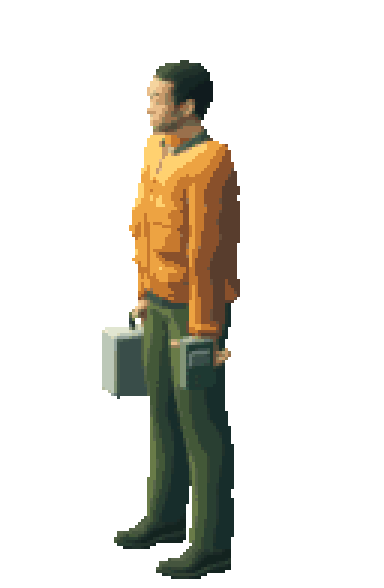
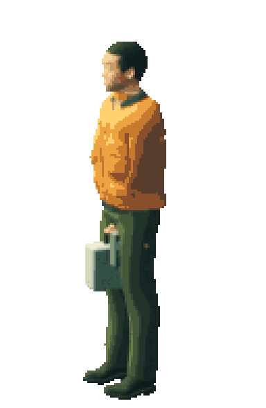
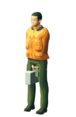

原野中的记录者
先把一个人站稳，再让他走。
这一轮只回到共享母版：肩线下沉、腿部收回承重三角，减少 AO 对衣料的压暗。相机、衣装、装备与像素尺寸保持同一基准；本页仍是制作复核，不是首页角色定稿。
实际尺寸 · 完整人物并排
所有图都是 128 × 196 原生画布；先看轮廓、肩胯和脚底，再看脸部与衣料色阶。


整数倍检查 · 不把放大误认成完成
放大图只用于检查像素簇是否撕裂；判断仍以原生尺寸的人体关系为准。


偏正面观察 · 看肩、手与器物
这是同一个站姿的换机位，不是新的转身动作。它用来检查肩线是否压住衣领、器物是否仍归属于手，以及身体是否被镜头方向误导。
- 重心
- 两脚保持可读的支撑三角，先确认鞋底与骨盆，再进入负重关键姿态。
- 肩线
- 肩胛随衣领向下收，不用一条水平线代替颈根、衣领和袖笼的连续结构。
- 光色
- AO 只保留接触提示，赭橙外套的明暗层次回到可读的绘画式色块。

这一轮之后的门槛
03 只证明共享母版可以集中修改姿势和光色；它没有自动解决脸部辨识、衣装造型或行走自然度。下一步先用这个母版做四个负重关键姿态，逐姿态检查骨盆、胸廓、肩肘、头、器物和支撑脚，再决定是否扩连续帧。